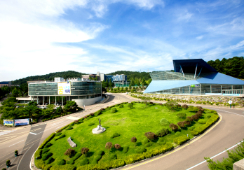

학과소개
학과소개 이미지
Department of Christian Social Welfare
기독교사회복지학과
- 01배재대학교 인문사회대학의 유일한 사회복지사 양성학과로서 사회복지와 기독교학을 융합한 선도적인 학과이며, “크고자 하거든 남을 섬기라“는 배재대학교의 건학이념을 구현하는 학과
- 02학생들의 관심과 진로 방향에 따라 이론과 실제를 겸비한 사회복지사, 상담사, 기독교지도자 양성
- 03융∙복합적 교육에 기반을 두고 다양한 자격을 갖춘 나눔과 섬김의 인재 양성
인재상
기독교사회복지학과는 우리 사회 속에서 빛과 소금의 역할을 하는 유능한 인재를 양성하고자 합니다.
- 인성과 지성과 영성을 균형 있게 겸비한 융합적 인재
- 인간과 사회에 선한 영향력을 끼치는 인재
- 긍정적인 자기 이해를 바탕으로 도전성과 창의성을 갖춘 인재
- 사회적 아픔을 공감하는 따뜻한 감수성을 가진 인재
졸업 후 취업 분야(진로)
- 사회복지사
- 중등교원/학교 교육복지사
- 기독교 상담사
- 기독교 사회복지사
- 기독교 지도자
졸업 후 취업 분야 및 기업
졸업 후 취업 기업
-
사회복지사
모든 사회복지기관 및 시설, 단체, 사회복지직 공무원, 기업사회공헌팀, 법무복지보호공단, 의료시설, 정신건강시설, 병원, 요양원, 학교, 교정시설, 사회복지대학원 진학 및 유학 등
-
중등교원/학교사회복지사
중∙고교 종교교사(정교사 2급), 교육대학원 진학 및 유학 등
-
기독교상담사
기독교상담기관, 상담대학원 진학 및 유학 등
-
기독교사회복지사
기독교사회복지기관, 전문대학원 진학 및 유학 등
-
기독교지도자
기독교기관 및 단체, 기독교신문 및 방송국, 기독교연합기관, 대학원 진학 및 유학 등
-
공무원/대기업 직원
공공기관, 대기업, NGO단체 등
대표적 취업 기업 : 사랑의열매, 공무원(교육청), 굿네이버스, 한국법무복지보호공단, 한화그룹(인사팀), 은행원(농협) 등
주요전공 교육과정
이론 및 실습

위 사진은 배재대학교 소유 저작물이므로, 외부 사용 시 배재대학교 입학전략홍보센터의 허가를 받아야 함